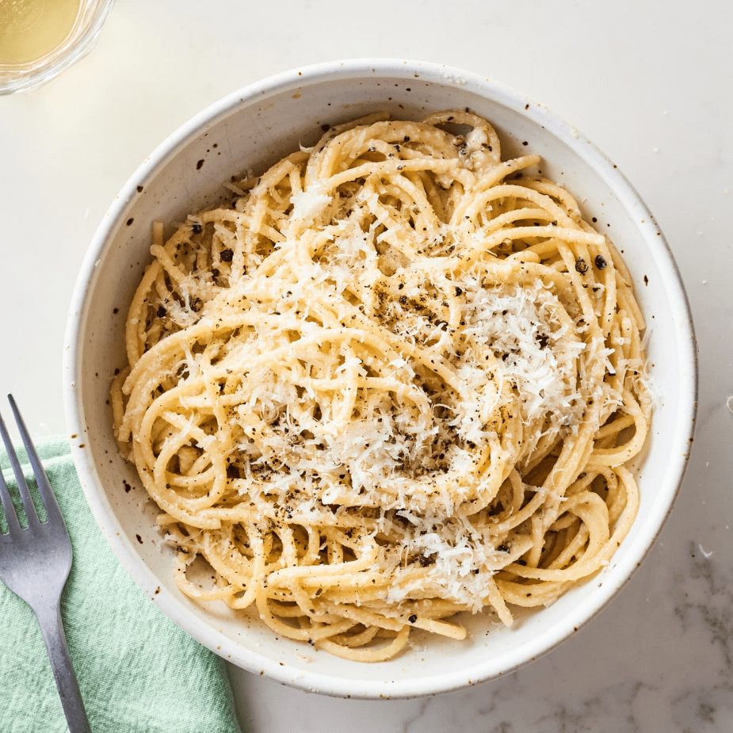

Back to the Homepage
Spaghetti Cacio e Pepe

This is a recipe that we have made in our family for many years. Everyone
loves it. It's a very basic and easy variation on mac 'n cheese.
Ingredients
- 1 pound spaghetti
- 6 tablespoons olive oil
- 2 cloves garlic, minced
- 2 teaspoons ground black pepper
- 1 3/4 cups grated Pecorino Romano cheese
Directions
-
Bring a large pot of lightly salted water to a boil. Cook spaghetti in
the boiling water, stirring occasionally until tender yet firm to the
bite, about 10 minutes. Scoop out some of the cooking water and reserve.
Drain spaghetti.
-
Heat oil in a large skillet over medium heat. Add garlic and pepper;
cook and stir until fragrant, 1 to 2 minutes. Add spaghetti and Pecorino
Romano cheese. Ladle in 1/2 cup of reserved cooking water; stir until
cheese is melted, about 1 minute. Add more cooking water until sauce
coats spaghetti, about 1 minute more.
Nutrition Facts
Per Serving: 807 calories; protein 31.6g; carbohydrates
87.8g; fat 36g; cholesterol 54.1mg; sodium 632.7mg.